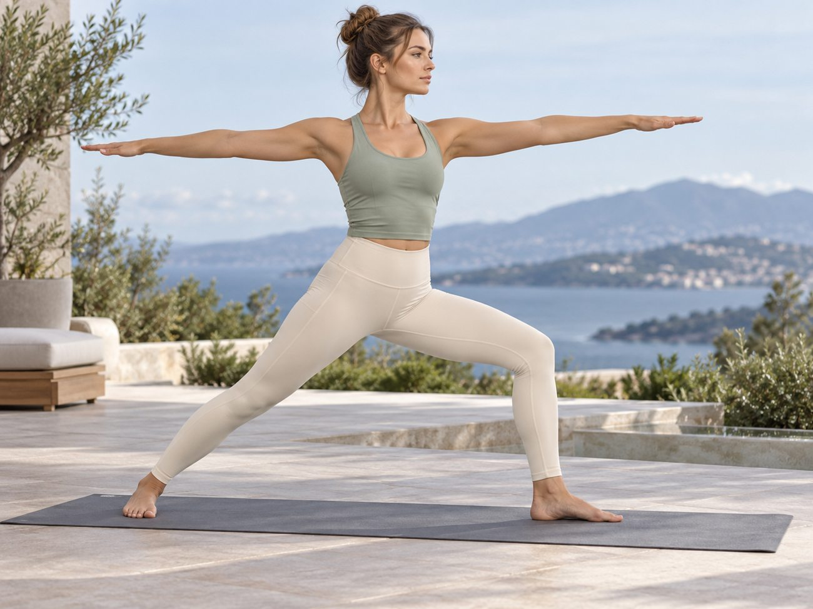
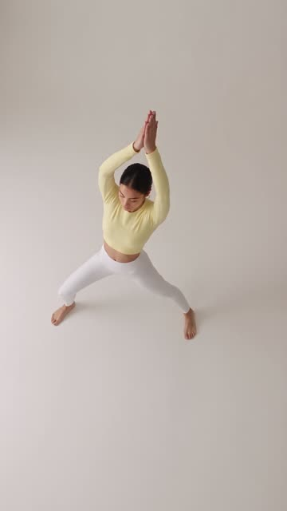
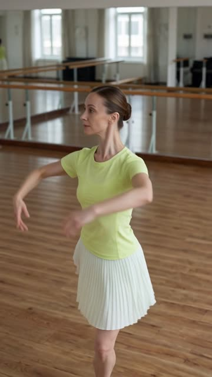
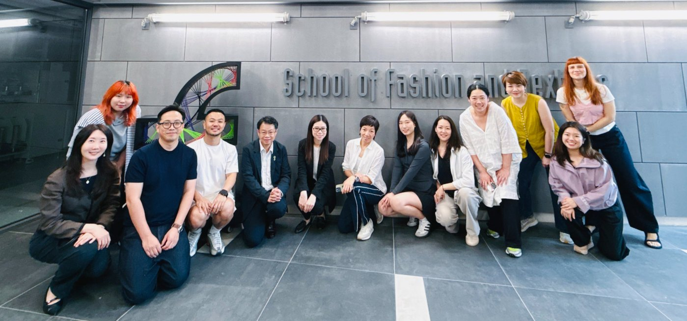
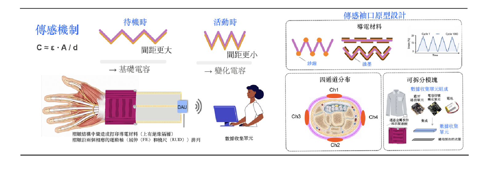

MINGZHOU
×
DECATHLON
2026 Strategic Committee
From fabric expertise Mingzhou × Decathlon · Strategic Committee · 2026
The integration of advanced technologyinto both product design and manufacturing process.
01 Business 02 Fabric 03 Digital 04 Circular 05 Recognition & 06 Strategic Direction
Mingzhou Textile: 2026 Disruptive Technology Committee 01 / 31
MINGZHOU
×
DECATHLON
2026 Strategic Committee
Agenda Topics, timing and owners
Today’s working session
120 minutes
Topic Duration Owner
01 Introduction 5 minMaxine 02 Business Review 10 minMaxine & Christie 03 Fabric Innovation 40 minChristie 04 Development with Digital Tools 25 minChristie 05 Open Discussion on Disruptive Technology 30 minAll 06 Strategic Direction & Minghan 10 minWatson
Mingzhou Textile: 2026 Disruptive Technology Committee 02 / 31
MINGZHOU
×
DECATHLON
Business Review Customer segments
Mingzhou’s five customer segments A shared view of the customers we serve and the needs we address.
01 Decathlon Market size Mass
High-durability Designed for mass retail.
02 CN Local Market size Mass
Fast fashion Trend-driven, cost-efficient apparel.
03 EU Sports Market size Medium
Premium technical Specialized fabrics for professionals and designer brands.
Starting S/S 2027
04 CN Sports Market size Niche
Premium technical Specialized fabrics for professionals and designer brands.
Starting S/S 2027
05 CN Sports Market size Mass
Accessible performance Broad consumer appeal
Starting S/S 2028
Mingzhou Textile: 2026 Disruptive Technology Committee 03 / 31
MINGZHOU
×
DECATHLON
Business Review 04 · Brand launches
Three brand launches in 2026
Successfully expanded our customer base across two specialized sports segments.
EU Sports Brands Market size · Medium
Premium technical fabrics for
CN Sports Brand Market size · Niche
Fabrics for surfing
CHENYIJIANG Brand photography featuring Mingzhou fabrics
View photo View photo View photo
Click a photo to enlarge
Mingzhou Textile: 2026 Disruptive Technology Committee 04 / 31
MINGZHOU
×
DECATHLON
Business Review 05 · Business performance
2026 business review Jan–Sep order intake and full-year forecast
TO · Jan–Sep 2026 ≈US$31.8m +18.2% vs Jan–Sep 2025
QTY · Jan–Sep 2026 7,730 tonnes
Decathlon TO share · FY2026 forecast 62%
Total business TO · US$m QTY · tonnes
0 2 4 6 Jan 2025: US$0.7m 0.7 Feb 2025: US$0.7m 0.7 Mar 2025: US$4.5m 4.5 Apr 2025: US$4.7m 4.7 May 2025: US$4.1m 4.1 Jun 2025: US$4.0m 4.0 Jul 2025: US$3.3m 3.3 Aug 2025: US$2.5m 2.5 Sep 2025: US$2.5m 2.5 Jan 2026: US$1.7m 1.7 Feb 2026: US$0.5m 0.5 Mar 2026: US$3.0m 3.0 Apr 2026: US$5.1m 5.1 May 2026: US$5.2m 5.2 Jun 2026: US$4.6m 4.6 Jul 2026: US$3.9m 3.9 Aug 2026: US$3.6m 3.6 Sep 2026: US$4.2m 4.2 Jan Feb Mar Apr May Jun Jul Aug Sep
0 500 1,000 1,500 Jan 2025: bar height estimated from the supplied chart; exact quantity not supplied Jan 2026: 490 tonnes 490 Jan Feb 2025: bar height estimated from the supplied chart; exact quantity not supplied Feb 2026: 140 tonnes 140 Feb Mar 2025: bar height estimated from the supplied chart; exact quantity not supplied Mar 2026: 710 tonnes 710 Mar Apr 2025: bar height estimated from the supplied chart; exact quantity not supplied Apr 2026: 1,080 tonnes 1,080 Apr May 2025: bar height estimated from the supplied chart; exact quantity not supplied May 2026: 1,240 tonnes 1,240 May Jun 2025: bar height estimated from the supplied chart; exact quantity not supplied Jun 2026: 980 tonnes 980 Jun Jul 2025: bar height estimated from the supplied chart; exact quantity not supplied Jul 2026: 870 tonnes 870 Jul Aug 2025: bar height estimated from the supplied chart; exact quantity not supplied Aug 2026: 1,050 tonnes 1,050 Aug Sep 2025: bar height estimated from the supplied chart; exact quantity not supplied Sep 2026: 1,170 tonnes 1,170 Sep
2026 TO by customer segment US$m
0 1 2 3 4 Jan Decathlon: US$1.18m 1.18 Jan CN Local Market: US$0.54m 0.54 Jan Feb Decathlon: US$0.44m 0.44 Feb CN Local Market: US$0.11m 0.11 Feb Mar Decathlon: US$2.33m 2.33 Mar CN Local Market: US$0.67m 0.67 Mar Apr Decathlon: US$4.21m 4.21 Apr CN Local Market: US$0.86m 0.86 Apr May Decathlon: US$4.11m 4.11 May CN Local Market: US$1.12m 1.12 May Jun Decathlon: US$3.82m 3.82 Jun CN Local Market: US$0.78m 0.78 Jun Jul Decathlon: US$3.00m 3.00 Jul CN Local Market: US$0.88m 0.88 Jul Aug Decathlon: US$1.98m 1.98 Aug CN Local Market: US$1.61m 1.61 Aug Sep Decathlon: US$2.20m 2.20 Sep CN Local Market: US$1.80m 1.80 Sep FY2026 forecast Decathlon 23.54 CN Local Market 14.0
Q4 outlook: CN Local peak-season orders are expected to rise sharply, reducing Decathlon’s share of full-year order intake.
TO = total value of orders received, not shipments. This basis applies to all TO figures on this page.
EU & CN Sports Brands: 2026 bulk business is not yet included in this view.
Mingzhou Textile: 2026 Disruptive Technology Committee 05 / 31
MINGZHOU
×
DECATHLON
Business Review 06 · R&D performance
R&D performance and commercial contribution 2026 KPI performance and turnover contribution
Pre-selection Rate 56% 2026 YTD · target ≥55%
+3 percentage points vs. 2025 Buy Offer conversions 6 2026 YTD · annual target ≥2
3× minimum annual target Approved functional hangtags 14 2026 YTD · annual target ≥8
6 above minimum target Fabric manuals 2 2026 YTD · annual target 2
Annual output target met Commercial contribution Share of total 2026 TO
Mingzhou Textile: 2026 Disruptive Technology Committee 06 / 31
MINGZHOU
×
DECATHLON
Business Review 07 · Monthly KPI tracking
Monthly KPI Tracking 2026 year-to-date results · As of September 30
KPI 2025 2026 2026 YTD Year-end New products (TS approved) 22 15 11 Target expected Go Indus Confirmation 23 24 14 Target expected Fabric developments · customer requests 51 48 77 Target met at YTD Fabric developments · self-initiated 121 60 135 Target met at YTD Pre-selection Rate 53% 55% 56% Target met at YTD Development LT 12.6 14.0 12.5 Target met at YTD Sample RFT rate 38.8% 50% 65% Target met at YTD 1st Lot DOT 79.3% 95.0% 90.33% Target expected
Mingzhou Textile: 2026 Disruptive Technology Committee 07 / 31
MINGZHOU
×
DECATHLON
Business Review 08 · 2026 order mix · Territory
Outdoor and Cross deliver 76% of turnover 2026 order quantity and turnover by end-product territory.
Mingzhou Textile: 2026 Disruptive Technology Committee 08 / 31
MINGZHOU
×
DECATHLON
Business Review 09 · 2026 order mix · Fabric family
Polar accounts for 72.40% of turnover 2026 order quantity and turnover by fabric family.
Common scale: 0–80%
Mingzhou Textile: 2026 Disruptive Technology Committee 09 / 31
MINGZHOU
×
DECATHLON
Business Review 10 · 2024–2026 partnership
Mingzhou & Decathlon 3Y Project Overview
MZ 2024–2026 PROJECT
An example of a Quick, Intelligent Fabric Manufacturer
Through digital management, continuous improvement and excellent products
D1
AGILITY
Order lead time −10% / year ≥80% <0.01%
D2
SUSTAINABILITY
Absolute CO₂ −35% vs. 2020 >50% +10% / year 100%
D3
PRODUCT EXCELLENCE
Pre-selection rate ≥50% <2%
E1 Industrial optimization Continuously optimize industrial processes to enhance RUN efficiency.
E2 People & capability Empower employees through OPEX and build capabilities to meet market needs.
E3 Digitalization Upgrade live supply-chain, energy and quality data to respond quickly to customer needs.
KEY OBJECTIVES Order LT −10% / year Absolute CO₂ −35% Pre-selection ≥50%
Mingzhou Textile: 2026 Disruptive Technology Committee 10 / 31
MINGZHOU
×
DECATHLON
Business Review
Performance scorecard 2026 performance, outstanding results and Minghan targets
Mingzhou Textile: 2026 Disruptive Technology Committee 11 / 31
MINGZHOU
×
DECATHLON
Business Review 12 · 3Y project
Project progress as of Sept. 30th
Operational KPIs across all three pillars meet their targets.
Project KPI 2024 2025 2026 target 2026 YTDas of Sept. 30 Reported status
Lead time vs. Base Yr 2023 −33.78% −17.57% −27% −3%* Off track *LT off track as FG placed early orders this year to lock better yarn price. −45% excluding these anomalies. CO₂ emissions (t) 17,439 14,646 17,032 12,005 On track Pre-selection rate 40% 53% >50% 56% On track
Agility ✓ 3/3 met
Sustainability ✓ 4/4 met
Product Excellence ✓ 2/2 met
ALL 9 OPERATIONAL KPIs MET
KPI 2026 target YTD
Greige availability >50% 100% ✓ Production LT <13.5 days 8 days ✓ High-risk inventory <1.5% 0.02% ✓
KPI 2026 target YTD
PES / PES-EA Eco-dye score >80 88 / 88 ✓ Eco-design >95% 99.7% ✓ Sensitive-color dyeing RFT >65% 68% ✓ Renewable energy usage 100% 100% ✓
KPI 2026 target YTD
RPM <650 217 ✓ BUY → Bulk ≥2 6 ✓
KPI 2026 target YTD
Greige availability >50% 100% ✓ Production LT <13.5 days 8 days ✓ High-risk inventory <1.5% 0.02% ✓ PES / PES-EA Eco-dye score >80 88 / 88 ✓ Eco-design >95% 99.7% ✓ Sensitive-color dyeing RFT >65% 68% ✓ Renewable energy usage 100% 100% ✓ RPM <650 217 ✓ BUY → Bulk ≥2 6 ✓
Mingzhou Textile: 2026 Disruptive Technology Committee 12 / 31
MINGZHOU
×
DECATHLON
02 Fabric Innovation
Decathlon’s offer strategy matches Mingzhou’s portfolio Shared priorities guide three complementary development roles.
Decathlon’s offer priorities (based on trend focus)
Lower ecological impactDecarbonize products
Longer product lifeStrengthen durability
Distinctive product benefitsLead through innovation
↓ Mingzhou’s portfolio response
Core Foundation Renew fleece, Performance Upgrade Combine function, Frontier Development Advance materials Mingzhou Textile: 2026 Disruptive Technology Committee 13 / 31
MINGZHOU
×
DECATHLON
Fabric Innovation 14 · Portfolio architecture
Three roles for Mingzhou’s fabric portfolio A portfolio response to decarbonization, durability and innovation.
FRONTIER DEVELOPMENT Future fibers · Smart wearables · Academic co-creation
FUTURE DIRECTION · Build the next innovation pipeline PERFORMANCE UPGRADE Water-Mark Free · Anti-Sheer & UV · Performance Wool
2026 INNOVATION FOCUS · Solve specific wearing needs CORE FOUNDATION High-gauge terry · Classic rib · Polar fleece
ESSENTIAL INFRASTRUCTURE · Scale, cost-efficiency and agile replenishment View Mingzhou Fabric Portfolio ↗
Mingzhou Textile: 2026 Disruptive Technology Committee 14 / 31
MINGZHOU
×
DECATHLON
Fabric Innovation 15 · Performance Platforms
2026 priorities: three fabric directions Each direction addresses a distinct wearing need.
Mingzhou Textile: 2026 Disruptive Technology Committee 15 / 31
MINGZHOU
×
DECATHLON
Fabric Innovation 16 · Water-Mark Free · Consumer opportunity
Water-Mark Free: confidence during effort Visible sweat patches create an unmet wearing need.
Less visible sweat.
Why this? Reduce self-consciousness during intense activity.
Where it matters? Urban running, indoor fitness, CrossFit, racket sports and dance.
Mingzhou Textile: 2026 Disruptive Technology Committee 16 / 31
MINGZHOU
×
DECATHLON
Fabric Innovation 17 · Water-Mark Free · Technical routes
Water-Mark Free: two routes to one benefit Reduce visible sweat while keeping comfort during movement.
SOLUTION 01 · STRUCTURE Double-layer structure OUTER · Moisture-spreading layer
INNER · Hydrophilic layer
A hydrophilic inner layer absorbs moisture. The outer layer spreads it across the surface.
SOLUTION 02 · LAMINATION Water-repellent lamination Water-repellent lamination
Light, elastic fabric
Water repellency with lightness and elasticity.
Mingzhou Textile: 2026 Disruptive Technology Committee 17 / 31
MINGZHOU
×
DECATHLON
Fabric Innovation 18 · Anti-Sheer & UV · Consumer opportunity
Light colors. Coverage in motion. Anti-Sheer & UV for lightweight stretch fabrics
Opacity with
Development approach Matte, light-scattering filaments + high-gauge knitting.
Intended product benefits Reduce transparency under stretch. Keep lightness and breathability.
Sun-protection proposition: durable UPF 50+.

Mingzhou Textile: 2026 Disruptive Technology Committee 18 / 31
MINGZHOU
×
DECATHLON
Fabric Innovation 19 · Performance Wool · Consumer opportunity
Natural wool comfort, built for repeat use Trekking, cold-weather running and winter base layers
Alex Moliski / Unsplash · Illustrative scenario · Source ↗ Comfort that lasts
Design challenge Balance wool comfort with wash stability, durability and cost.
Product focus Match the blend to the activity and care needs.
Mingzhou Textile: 2026 Disruptive Technology Committee 19 / 31
MINGZHOU
×
DECATHLON
Fabric Innovation 20 · Performance Wool · Blend strategy
Three wool blends. Three functional priorities.
Mingzhou fabrics with direct access to the supplied 3D references
Wool + Tencel
CW2959 99 g/m²
Moisture management
Explore the fabric Scan in WeChat
Enlarge code ↗
Wool + Nylon
CW2892B 135 g/m²
Anti-snagging
Explore the fabric Scan in WeChat
Enlarge code ↗
Wool + Polyester
CW2907 200 g/m²
Reduced stickiness
Explore the fabric Scan in WeChat
Enlarge code ↗
WeChat → 炫布+ · Sign in with your authorized account to view fabric details and 3D models.
Mingzhou Textile: 2026 Disruptive Technology Committee 20 / 31
MINGZHOU
×
DECATHLON
03 Digital Development
Digital fabric assets for faster selection One fabric record connects physical samples, ERP data and virtual prototypes.
01 Digital fabric asset One Fabric, One Code links each physical swatch to its digital record through RFID.
Fabric specifications
02 ERP integration Connect the same fabric record to live inventory and order information.
Availability + orders
03 Prototype visualization Style3D model shots and videos show the fabric’s surface pile, drape and thickness.
04 Customer decision package Combine specifications, ERP information and visuals so designers can shortlist suitable fabrics.
One package to review
PREVIOUS APPROACH A physical prototype for every fabric recommendation.
→ DIGITAL WORKFLOW Physical prototypes only for selected fabrics.
Mingzhou Textile: 2026 Disruptive Technology Committee 21 / 31
MINGZHOU
×
DECATHLON
Digital Development 22 · Connected samples
A connected sample-selection experience Fabric cards, live information and a shared model view
Your browser does not support embedded video. Play from start Download MP4 32 seconds · Silent, with captions
Explore the workflow 01 · Select Several tagged cards enter the cart. 02 · Read RFID identifies the chosen fabrics. 03 · Retrieve Specifications and inventory appear. 04 · Visualize A model view puts the fabric in context. 05 · Discuss Customer and team review the product. Concept animation. AI-generated imagery and illustrative data, not a live installed system.
Mingzhou Textile: 2026 Disruptive Technology Committee 22 / 31
MINGZHOU
×
DECATHLON
04 Circular Materials
T2T portfolio and commercial adoption 2026 commercial contribution and developed fabric range
4.01% of total 2026 turnover
3.62% of total 2026 order quantity
In bulk production 3 products ✓ COLUSON RPET T2T ✓ ROCKSON RPET T2T ✓ CLARKSON RPET T2T
Available for selection 14 developed products CLARKSON RPET E+ T2T CLARKSON RPET HTH DDY T2T DAHU TEST SPUN T2T KIRUNA RPET MM CLARKSON RPET LUCK RPET GOLD RPET SCOTT RPET MOORE RPET LEDDY RPET RICKER RPET BB OLSON RPET Koski REC CERD DAHU DDY HTH RPET2T MM
Mingzhou Textile: 2026 Disruptive Technology Committee 23 / 31
MINGZHOU
×
DECATHLON
Circular Materials 24 · Mingzhou roadmap · Material pathways
Four material pathways Select a direction to explore its progress and development pathway.
B2T Bottle to textile T2T Textile to textile C2T Carbon to textile Biodegradation PET Future material direction
98%
Mingzhou 2026 Decathlon production coverage
Mature foundation · Source-reported An established production base Physical bottle recycling supplies polyester for Mingzhou fabric production.
Simplified material conversion process 01 Bottle feedstock 02 Physical recycling 03 Polyester yarn 04 Fabric production RMB 11.16m
Mingzhou production savings since T2T project
Partnered scrap-to-polyester route A textile loop with Jiaren Production waste becomes T2T polyester.
Simplified material conversion process 01 Production waste 02 Recycling partner: Jiaren 03 T2T polyester 04 Fabric production
YARN −37% CO₂
Compared with Bottle to Textile
Latest LCA report DEVELOPMENT 27
C2T products developed By Mingzhou in 2026
Simplified material conversion process 01 Carbon source 02 Shenghong conversion 03 Fiber / yarn 04 Fabric production
Technology
Biodegradation PET
Future material direction Recover monomers. Rebuild PET. Depolymerize PET waste into rPTA and rEG, then repolymerize these monomers into recycled PET.
PET regeneration process
01 · FEEDSTOCK Waste PET Bottles · Polyester fabrics
02 · DEPOLYMERIZATION rPTA + rEG Recovered monomers
03 · REPOLYMERIZATION Recycled PET Rebuilt polymer
04 Fabric production Four material pathways Route Source-reported position Evidence / next step B2T 98% Mingzhou 2026 Decathlon production coverage Bottle feedstock, physical recycling, polyester yarn, fabric production. T2T Mingzhou production savings since T2T project: RMB11.16m Confirm calculation, feedstock and yield. C2T Yarn CO₂ −37% vs. Bottle to Textile, from the latest LCA report 27 C2T products developed by Mingzhou in 2026. Biodegradation PET Technology tracking for PET regeneration Waste PET bottles, polyester fabrics and polyester–cotton/polyester–spandex blends → rPTA and rEG monomers → repolymerized recycled PET → fabric production.
Source: Mingzhou supplied roadmap. All numerical claims remain source-reported.
Mingzhou Textile: 2026 Disruptive Technology Committee 24 / 31
MINGZHOU
×
DECATHLON
05 Recognition & Partnerships
ISPO recognition spans ten fabrics Two Top 5 entries, one Top 10 entry and seven selections.

▶ Play video
TOP 5 Indoor Cozy CW3073 Base Layer
Play video ↗
▶ Play video
TOP 5 Performance Wool CW2996 Street Sports
Play video ↗

▶ Play video
TOP 10 Water-Mark Free CW2920 Second Layer
Play video ↗ 7 further selections across F/W and S/S 2026
View all 10 entries ↗ View official ISPO collection ↗
Mingzhou Textile: 2026 Disruptive Technology Committee 25 / 31
MINGZHOU
×
DECATHLON
Recognition & Partnerships 26 · Academic collaboration
Academic collaboration with PolyU
01 / CIRCULAR DESIGN
RE:FORM
PolyU SFT × lululemon

Students redesign end-of-life garments and surplus materials.
MINGZHOU’S ROLE Fabrics and funding support.
02 / SMART WEARABLE RESEARCH
Parkinson’s tremor & movement sensing
Research aim: Monitor Parkinson’s disease tremors and movement stability between clinical evaluations.
MINGZHOU’S ROLE Customized pleated knit fabric. The research team integrated 3D-printed flexible conductive pathways into the fabric.

View sensor mechanism & prototype ↗
Mingzhou Textile: 2026 Disruptive Technology Committee 26 / 31
MINGZHOU
×
DECATHLON
06 Strategic Direction & Minghan
Earlier trend alignment guides development Proposed: co-create concepts before seasonal briefs.
01 N+2Y trends Analyze color, fabric, print and finishing.
02 Targeted fabrics Translate trends into development themes and fabric manuals.
03 Joint selection Align briefs with customer’s product strategy.
04 Agile execution Use digital sampling and the future Minghan capability.
Mingzhou Textile: 2026 Disruptive Technology Committee 27 / 31
MINGZHOU
×
DECATHLON
Strategic Direction & Minghan 28 · Co-creation · Working rhythm
Twice-yearly innovation workshops Trend alignment, shared development priorities and component readiness before hanger selection.
2 workshops per yearAligned with the hanger-selection calendar
01 · MINGZHOU Trend analysis Mingzhou shares trend analysis in advance for Decathlon’s review.
02 · DECATHLON + PARTNERS Strategic alignment Decathlon reviews priorities and convenes a workshop with yarn, component and garment suppliers.
03 · ALL PARTICIPANTS Joint development Agree development topics, responsibilities and component requirements.
04 · COMPONENT DEVELOPMENT Selection readiness Complete component development ahead of hanger selection.
Mingzhou Textile: 2026 Disruptive Technology Committee 28 / 31
MINGZHOU
×
DECATHLON
Strategic Direction & Minghan 29 · Product & material priorities
Joint flagship and material priorities Decathlon’s strategy for the next 2–3 years
2027 FLAGSHIP
Which performance direction should Mingzhou and Decathlon prioritize for a joint flagship in 2027?
01
Water-Mark Free 02
Anti-Sheer & UV 03
Performance Wool BIODEGRADATION PET
What are Decathlon’s plans and requirements for adopting biodegradable PET?
Mingzhou Textile: 2026 Disruptive Technology Committee 29 / 31
MINGZHOU
×
DECATHLON
Strategic Direction & Minghan 30 · Circular-material scale
Commercial scale for T2T and C2T Development and supply coordination
How can Mingzhou support Decathlon in scaling T2T and C2T commercially?
Demand Priority applications and volume outlook
Qualification Performance requirements and validation needs
Supply readiness Development support, production coordination and rollout timing
Discussion outcome: agree the support Mingzhou should provide and the next joint milestones.
Mingzhou Textile: 2026 Disruptive Technology Committee 30 / 31
MINGZHOU
×
DECATHLON
Strategic Direction & Minghan
Minghan commissioning timeline Key milestones through November 2027
Completed milestones
✓ DEC 2024 Groundbreaking
✓ OCT 2025 Topping-out ceremony
Key milestone
DEC2026
JAN2027
FEBCNY
MAR
APR
MAY
JUN
JUL
AUG
SEP
OCT
NOV
Government Inspection
Overall
Basic audits · HRP / ENV
MH HRP
Machine installation
New Machine Installation Existing Machine Migration
MH opening
Online
MH × DKL project launch
On-site &
Government inspection: handover from construction to operations.
*October–November on-site project activity is pending feedback.
View full schedule & owners ↗ Mingzhou Textile: 2026 Disruptive Technology Committee 31 / 31